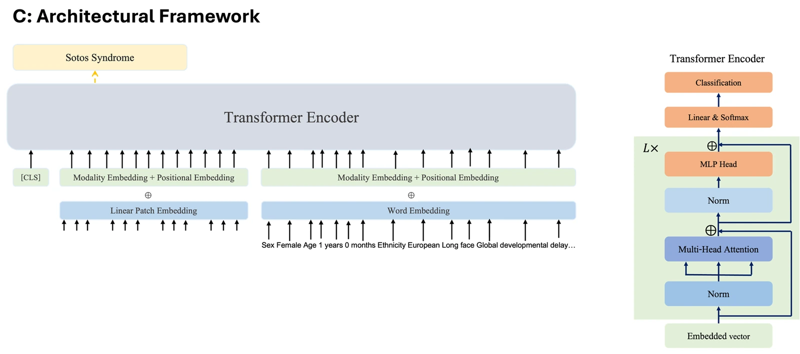
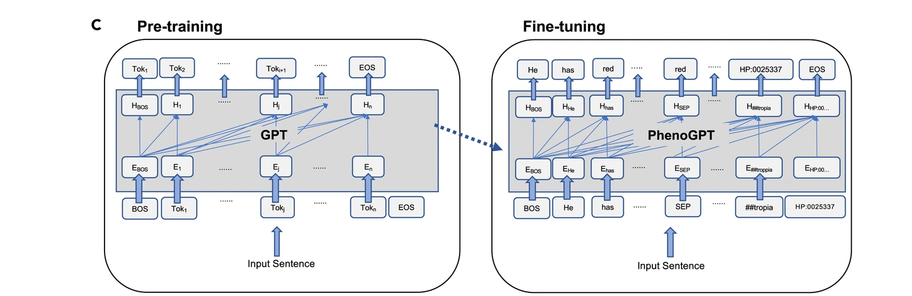
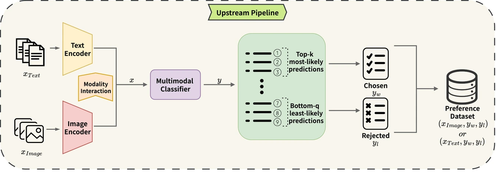
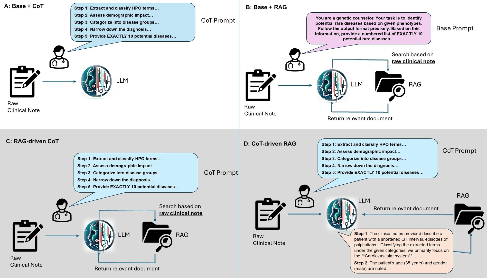

Epigram
I built Epigram around the harder questions candidates encounter at quant firms. Pick a firm, work through a recent interview problem, then compare your reasoning with solutions I’ve checked by hand.
Try a problem →I’m Jeremy Wu, a mathematician by training. I want to build AI that helps people reason through hard problems and make decisions when the evidence is incomplete. My work draws on probability, statistics, econometrics, and machine learning.
I’m looking for an applied research role where I can build models, design experiments, and work with the people who use the results.
I built Epigram around the harder questions candidates encounter at quant firms. Pick a firm, work through a recent interview problem, then compare your reasoning with solutions I’ve checked by hand.
Try a problem →
At Children’s Hospital of Philadelphia, I built a transformer that combines facial photos, demographics, and clinical notes to rank possible diagnoses. We tested it across 528 rare disorders.

Clinicians can describe the same finding in many ways. We built PhenoGPT to recognize those descriptions in free text and link them to the Human Phenotype Ontology.

We trained a text-only model to benefit from medical images. A teacher sees both the image and the clinical note and ranks possible diagnoses. Odds ratio preference optimization (ORPO) uses those rankings to teach the smaller model which answers to favor.
ℒORPO = 𝔼[ℒSFT + λ ℒOR]
ℒOR = −log σ(log oddspreferred − log oddsrejected)
The supervised term rewards reproducing the preferred answer. The odds-ratio term rewards assigning it higher odds than the rejected answer. The weight λ sets the balance.

We tested when a language model should look up evidence as it reasons through a rare-disease case. On noisy hospital notes, identifying clinical clues before searching led to more relevant evidence.
At Mina Analytics, I led research on what green certification is worth to an office building. Charles Calomiris and I estimated how lease premiums vary by property, giving owners a way to weigh an upgrade against its cost.
Explore the model November 2025 working paper →A weekly reversal strategy looks profitable on a seeded synthetic dataset. Switch on modeled A-share trading costs to see why I rejected it.
Explore the backtest ↗I built a terminal to screen US and Chinese equities and compare investment ideas with macro and prediction-market signals. Each saved idea keeps my reasoning alongside the data I had that day.
Explore the code ↗Journal articles, conference work and manuscripts across four research areas.
Browse publications →